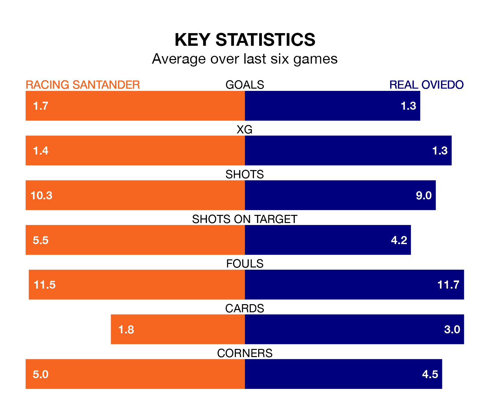

Racing Santander face a challenge to maintain their high-scoring form at home against a tight Real Oviedo defence on Sunday.
With 29 goals in 18 games, Racing are the joint-second-highest scorers in the Segunda División ahead of the 3.15pm kick-off at Campos de Sport de El Sardinero.
They face a Real Oviedo side who have scored 17 in 18 matches, but conceded only 11 goals, putting them second among the league's tightest defences – only Leganés have conceded fewer goals.
In Gerard Fernández Castellano, Racing have one of the league's sharpest shooters so far this season. He has notched eight goals in 17 appearances, to sit second in the scoring charts.
His goal rate of one every 135 minutes is much quicker than that of Borja Bastón, Oviedo's top scorer with a goal every 279 minutes, and a total of five goals in 18 games.
In the last five years, Racing and Oviedo have played each other on four occasions. Oviedo won three of them and they drew once.
On average, Racing Santander scored 0.2 goals and Real Oviedo 1.0 in those matches.
Their last meeting was on May 21, when Oviedo won 1-0 at home.
Racing Santander are eighth in the table after 18 games, of which they have won eight and drawn four, earning 28 points.
Real Oviedo are three places behind the hosts in 11th, with six wins and seven draws putting them on 25 points.
Racing are in mixed form in the Segunda División, with two wins and a draw from their last six games.
With three wins and two draws over that period, the away side's form is better – they have taken 11 points from 18, compared to Racing's seven.
Racing's last match was on Sunday, a 0-0 draw against Mirandés.
Oviedo beat RCD Espanyol 2-0 last time out, on December 1, with Francisco Fumaça Mascarenhas Costa Pessoa and Santiago Colombatto on the scoresheet.
